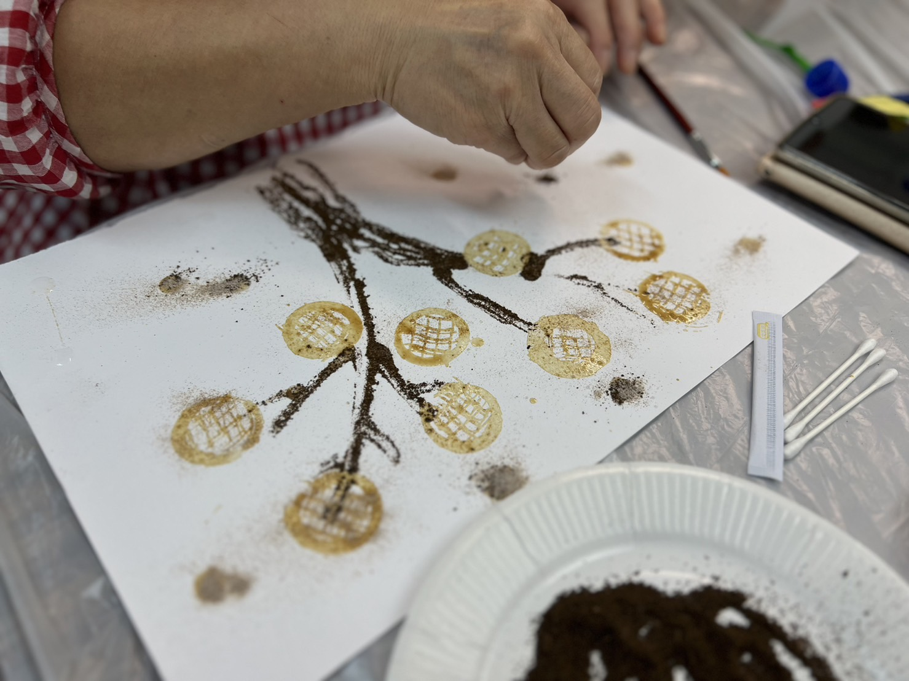
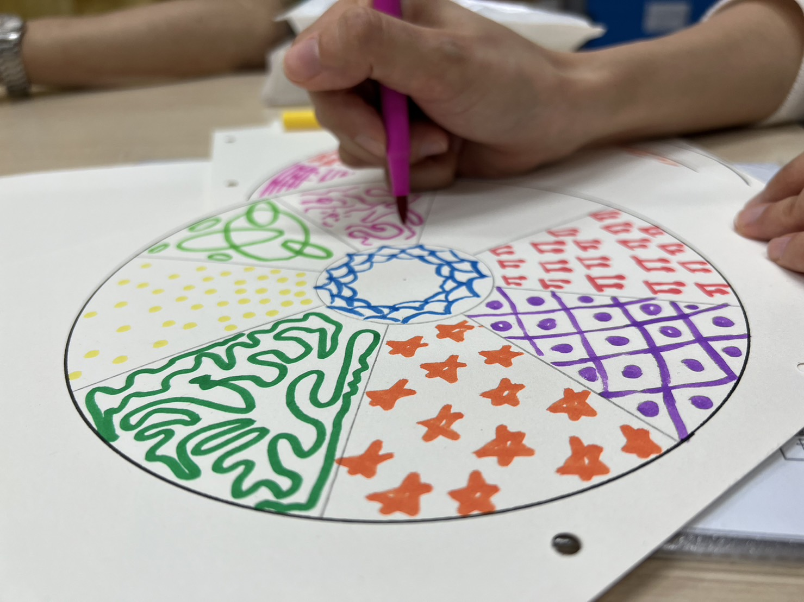

現象學派表達藝術治療是一種結合了表達藝術和心理學的跨專業模式，主要透過五感（視覺、聽覺、味覺、嗅覺及觸覺）及感知互動表達與綜合藝術媒體，包括視覺藝術、音樂、舞動、戲劇及創意寫作，來連繫及探索自己的身體、情感和思想，轉化成個人的內在資源，以促進身、心、靈健康及個人成長。
 運用身體的五感：視覺、聽覺、味覺、嗅覺及觸覺，隨心感受此時此刻來提升身體及內在的覺察。
在體驗某種藝術媒體後再轉換另一種藝術形式，從而加深創作過程的經驗及藝術帶來的盛載，再轉化成個人的內在資源。
重視案主的個人想法與選擇，陪伴案主經歷及將創作轉化成內在資源，學習自我欣賞。
毋需要任何藝術創作經驗，任何人都可以創作出「動人」的藝術作品及作出美感(感知)的回應。